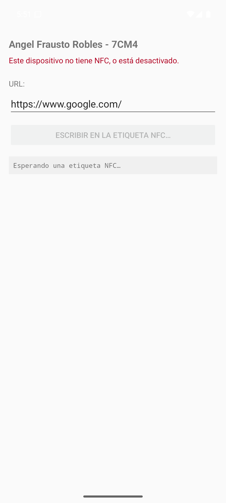

| Asignatura: | Desarrollo de Aplicaciones Móviles Nativas |
| Práctica: | Práctica 16 |
| Alumno: | Angel Frausto Robles |
| Grupo: | 7CM4 |
| Fecha: | 21 de noviembre de 2026 |
NFC (Near Field Communication) es una tecnología inalámbrica de corto alcance (~10 cm, 13.56 MHz, estándar ISO/IEC 18092 / NFCIP-1) para intercambiar pequeñas cantidades de datos entre dos dispositivos, o entre un dispositivo y una etiqueta pasiva. Android distingue tres modos: peer-to-peer (dos teléfonos), lector/escritor (el teléfono lee o escribe etiquetas NFC) y emulación de tarjeta (el teléfono imita una tarjeta sin contacto, pagos). El formato común de datos es NDEF (NFC Data Exchange Format): un mensaje NDEF es una lista de registros, cada uno con un tipo (por ejemplo urn:nfc:wkt:U para una URI) y un payload.
Objetivos (modo lector/escritor, API android.nfc):
google_apis x86_64) usado en las demás prácticas, pero los emuladores de arquitectura x86/x86_64 no emulan hardware NFC: NfcAdapter.getDefaultAdapter(this) devuelve null, como muestra la Fig. 1. La app detecta esto correctamente (igual que lo haría en un teléfono real sin chip NFC) y deshabilita el botón de escritura en lugar de fallar. Probar la escritura y lectura reales de una etiqueta (figuras 2–4 de la guía original) requiere un dispositivo físico con NFC y una etiqueta NDEF (o una tarjeta MIFARE/NTAG compatible), que no estaban disponibles para esta entrega; por eso no se incluyen capturas de «Etiqueta detectada» — incluirlas sin una etiqueta real habría significado fabricar una ejecución que no ocurrió.El código, sin embargo, es el mismo que correría en un teléfono con NFC: uses-feature android.hardware.nfc required="false" en el manifiesto permite que la app se instale igual en dispositivos sin el sensor, validando su presencia en tiempo de ejecución.
showDialog(int) / onCreateDialog(int, Bundle) / onPrepareDialog / dismissDialog(int), deprecados desde API 13 y ya no disponibles en Activity moderno. Se sustituyeron por AlertDialog.Builder construido y mostrado directamente en el OnClickListener del botón, y por otro AlertDialog.Builder armado al leer la etiqueta.android.nfc.Ndef no existe. La guía escribe Ndef y NdefFormatable como si vivieran en el paquete android.nfc; en realidad están en android.nfc.tech (son clases de tecnología de etiqueta, igual que MifareClassic o IsoDep). Sin este ajuste el proyecto no compila.El NfcAdapter se activa en primer plano (enableForegroundDispatch) mientras la Activity está visible, para que cualquier etiqueta detectada se entregue aquí y no a otra app. resolveIntent decide entre escribir (si el usuario pulsó el botón) o leer, según la bandera mWriteUrl:
private void resolveIntent(Intent data, boolean foregroundDispatch) {
if (esRelanzamientoDesdeHistorial(data)) return;
String action = data.getAction();
if (!(NfcAdapter.ACTION_TECH_DISCOVERED.equals(action)
|| NfcAdapter.ACTION_NDEF_DISCOVERED.equals(action))) return;
Tag tag = data.getParcelableExtra(NfcAdapter.EXTRA_TAG);
if (tag == null) return;
if (foregroundDispatch && mWriteUrl) {
mWriteUrl = false;
escribirUrlEnEtiqueta(tag);
} else {
leerEtiqueta(tag, data);
}
}
private void escribirUrlEnEtiqueta(Tag tag) {
NdefRecord urlRecord = NdefRecord.createUri(myUrl.getText().toString());
NdefMessage msg = new NdefMessage(new NdefRecord[]{urlRecord});
Ndef ndefTag = Ndef.get(tag);
if (ndefTag != null) {
ndefTag.connect();
ndefTag.writeNdefMessage(msg);
ndefTag.close();
} else {
NdefFormatable formateable = NdefFormatable.get(tag);
formateable.connect();
formateable.format(msg);
formateable.close();
}
}
private void leerEtiqueta(Tag tag, Intent data) {
StringBuilder info = new StringBuilder();
info.append("UID: ").append(bytesToHex(tag.getId())).append("\n");
Parcelable[] ndefRaw = data.getParcelableArrayExtra(NfcAdapter.EXTRA_NDEF_MESSAGES);
if (ndefRaw != null) {
for (Parcelable p : ndefRaw) {
for (NdefRecord record : ((NdefMessage) p).getRecords()) {
if (record.getTnf() == NdefRecord.TNF_WELL_KNOWN
&& Arrays.equals(record.getType(), NdefRecord.RTD_URI)) {
info.append("URI: ").append(record.toUri()).append("\n");
}
}
}
}
tvLog.setText(info.toString());
}
Ndef.get(tag) usa la API moderna NdefRecord.createUri()/toUri(), que reemplaza el ensamblado manual de bytes (prefijo 0x01 = "http://www.", etc.) que hace la guía a mano: el resultado NDEF es el mismo, pero el código es más corto y no depende de tablas de prefijos.
La Activity se declara launchMode="singleTask" y con un segundo intent-filter para android.nfc.action.NDEF_DISCOVERED sobre el host de ejemplo www.google.com; al tocar una etiqueta NDEF con una URI de ese host, Android abre la app directamente (sin pasar por el launcher), y onNewIntent reenvía el intent a resolveIntent:
<intent-filter>
<action android:name="android.nfc.action.NDEF_DISCOVERED" />
<category android:name="android.intent.category.DEFAULT" />
<data android:scheme="https" android:host="www.google.com" android:pathPrefix="" />
<data android:scheme="http" android:host="www.google.com" android:pathPrefix="" />
</intent-filter>
En una app real el host del filtro debe ser el dominio propio de la aplicación (verificado con Digital Asset Links), no google.com; aquí se dejó igual que el ejemplo de la guía solo para ilustrar la sintaxis.

Esta práctica fue más una lectura de API que una prueba de extremo a extremo: el emulador de Android Studio en x86_64 no simula un chip NFC, así que lo único verificable en este entorno es que el código compila con la API correcta (android.nfc.tech.Ndef, no android.nfc.Ndef) y que la app responde con gracia cuando no hay NFC, en vez de fallar. Lo más revelador de leer la guía fue ver que todo el modelo de NFC en modo lector/escritor gira en torno al foreground dispatch: mientras la Activity esté visible, ella «se adueña» de cualquier etiqueta detectada antes que el resto del sistema, y el intent-filter de autoinicio solo entra en juego cuando la app no está al frente.